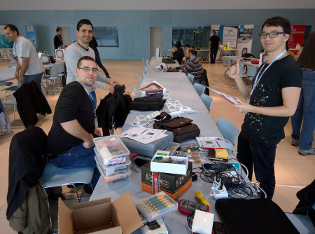

En dos palabras, ¡IM PRESIONANTE! :-).
Saliendo ya de la nube después de un intenso fin de semana. Adam, David, Jorge y José Manuel decidimos pasar el 28 y 29 de febrero jugando a hacer “puzzles”. Un caja de cartón, un “mini ordenador”, sensores, cables, varios lenguajes de programación y una idea, construir entre todos un dispositivo interesante y que además, funcione, una nasa “inteligente”.
Llegamos, nos sentamos y tras el primer café asistimos a un par de charlas que nos van metiendo en el tema. Carlos Groba presenta a Marine Instruments, una empresa gallega con sede en Nigrán, un caso de éxito con 100 empleados que ha desplegado 25.000 boyas interconectadas por todo el mundo para asistir a los atuneros con datos que les permitan tomar decisiones para pescar de forma más eficiente. Espectacular y un gran comienzo para entender la importancia económica de las nuevas tecnologías en un sector clave para Vigo, Galicia y España como es el marítimo.

Seguir leyendo ...